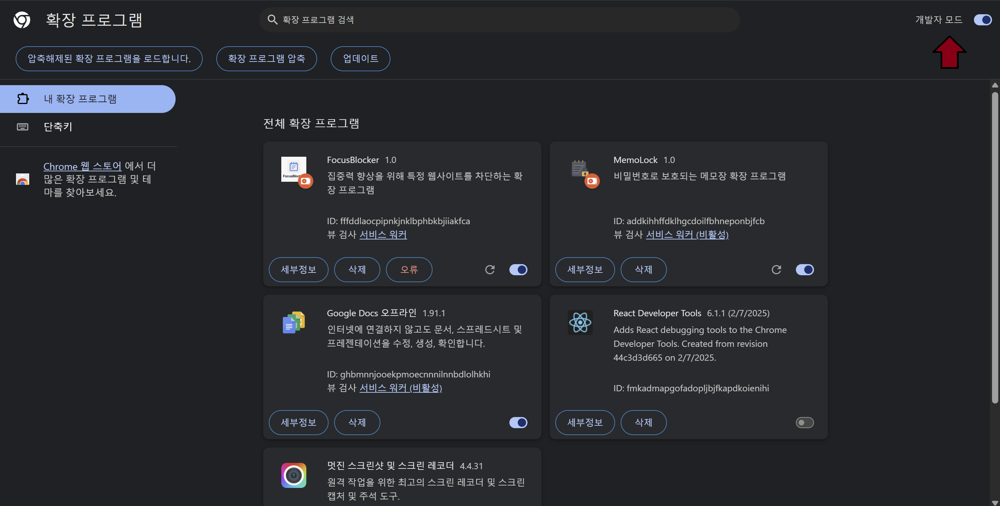
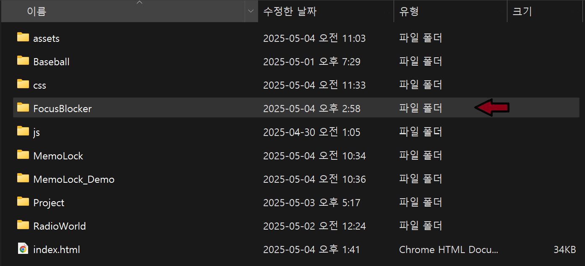

집중력 향상 도구
FocusBlocker는 Chrome 브라우저에서 동작하는 집중력 향상 확장 프로그램입니다. 사용자가 설정한 방해 사이트를 차단하여 업무나 공부에 더 집중할 수 있도록 도와줍니다. 사이드패널을 통해 쉽게 차단 사이트를 관리하고, 집중 모드를 켜고 끌 수 있습니다.
사이트 차단
소셜 미디어, 동영상 등 집중을 방해하는 사이트 차단
집중 모드
한 번의 클릭으로 집중 모드를 켜고 끌 수 있습니다
간편한 설정
사이드패널을 통해 쉽게 차단 사이트를 관리
시각적 알림
차단된 사이트 접속 시 시각적 알림 제공
설치 방법
-
확장 프로그램 다운로드
아래 다운로드 버튼을 클릭하여 FocusBlocker.zip 파일을 다운로드합니다.
-
압축 해제
다운로드한 ZIP 파일의 압축을 적절한 위치에 해제합니다.
-
크롬 확장 프로그램 페이지 접속
Chrome 브라우저에서
chrome://extensions/로 이동합니다. -
개발자 모드 활성화
우측 상단의 "개발자 모드" 토글을 활성화합니다.
개발자 모드 토글을 ON으로 설정하세요
-
확장 프로그램 로드
"압축해제된 확장 프로그램을 로드합니다" 버튼을 클릭하고, 압축 해제한 FocusBlocker 폴더를 선택합니다.
압축해제된 확장 프로그램 로드 버튼을 클릭하세요
-
확장 프로그램 고정
Chrome 툴바에서 확장 프로그램 아이콘을 클릭하고 FocusBlocker를 고정합니다.

FocusBlocker 아이콘을 툴바에 고정하세요
사용 방법
1. 차단할 사이트 추가하기
사이드패널에서 차단하고 싶은 사이트 도메인을 입력하고 '추가' 버튼을 클릭합니다.
차단하고 싶은 사이트 도메인을 입력하고 '추가' 버튼을 클릭하세요
2. 집중 모드 활성화하기
사이트 목록을 모두 추가한 후 토글 버튼을 클릭하여 집중 모드를 활성화합니다.
토글 버튼을 클릭하여 집중 모드를 활성화하세요
3. 차단된 사이트 접속 시
집중 모드가 활성화된 상태에서 차단 목록에 있는 사이트에 접속하면 차단 화면이 표시됩니다.
차단된 사이트에 접속하면 집중 모드 알림이 표시됩니다
4. 차단 사이트 관리하기
차단 목록에서 더 이상 차단하지 않을 사이트는 '삭제' 버튼을 클릭하여 제거할 수 있습니다.

차단 목록에서 사이트를 제거하려면 '삭제' 버튼을 클릭하세요
다운로드
아래 버튼을 클릭하여 FocusBlocker 확장 프로그램을 다운로드하세요.
FocusBlocker 다운로드기술 정보
사용 기술
- HTML, CSS, JavaScript
- Chrome Extension API (Manifest V3)
- SidePanel API
- Chrome Storage API
- Content Script
주요 특징
- 모던 UI/UX 디자인
- URL 패턴 매칭
- 즉각적인 차단 효과
- 직관적인 사용자 인터페이스